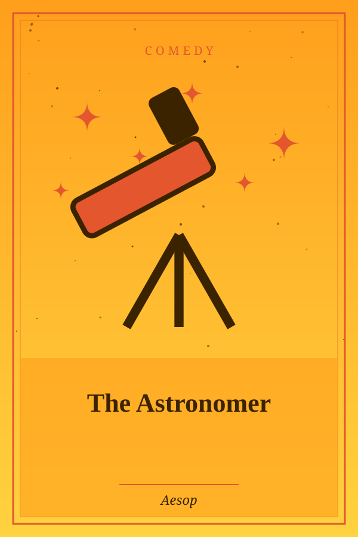

The Astronomer
Genre: Comedy
Synopsis
An astronomer so busy studying the stars forgets to watch where he is walking.
Chapter 1: The Astronomer
An Astronomer used to go out at night to observe the stars. One evening, as he wandered through the suburbs with his whole attention fixed on the sky, he fell accidentally into a deep well. While he lamented and bewailed his sores and bruises, and cried loudly for help, a neighbor ran to the well, and learning what had happened said: “Hark ye, old fellow, why, in striving to pry into what is in heaven, do you not manage to see what is on earth?”